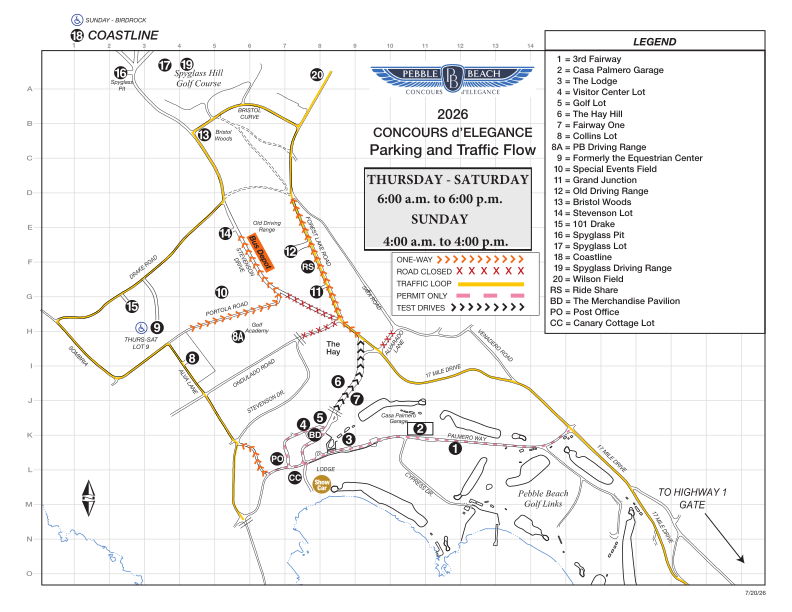

路线只留在 Pebble Beach 与 Monterey
8 月 11 日官方新版地图显示环线经 17-Mile Drive、Hwy 1、Hwy 68、Olmsted Road 与 Aguajito Road；不再进入 Carmel 或 Big Sur。
新版环线
道路顺序来自官方路线图的视觉判读；更新正文仅明确路线留在 Pebble Beach 与 Monterey。
官方 Monterey Car Week 自 8 月 7 日开场，高峰仍在 13–16 日。这份指南覆盖从免费早场街展到周一返程的完整 11 天：何时、去哪里、值不值得、住哪里、路上多久。
Kickoff · ACE 藏品 · 慈善街展 · 微型车展 · Tour · 品牌/赛道 · Concours · 返程
以真实坐标标注 Pebble Beach、Carmel、Carmel Valley、Pacific Grove、Monterey、Seaside 与 Laguna Seca。
若能周五至周三提前落地，慈善街展、微型车展与 Asilomar 免费活动能先建立尺度；Tour 前再决定是否要为赛道与主展买单。
时钟按 America/Los_Angeles（太平洋时间）。用下方筛选浏览全部、此刻进行中、今日活动，或按日期、地点、推荐与价格缩小列表；过期日期默认折叠。票价和余票会变，购买前请打开每张卡片里的官方来源复核。演示可用 ?demoDate=2026-08-08&demoTime=14:30。
“此刻”依赖公开时段字符串的近似解析；多场次与开放式结束时间会放宽匹配。
官方 8 月 12 日更新因 Big Sur Timber Fire 与相关疏散调整传统路线。以下把官方时刻与本站观看规划分开标注，避免把建议误当成主办方保证。
8 月 11 日官方新版地图显示环线经 17-Mile Drive、Hwy 1、Hwy 68、Olmsted Road 与 Aguajito Road；不再进入 Carmel 或 Big Sur。
道路顺序来自官方路线图的视觉判读；更新正文仅明确路线留在 Pebble Beach 与 Monterey。
官方注明所有时间均为约数，可能调整。
官方没有公布普通观众固定停车场。进入 Pebble Beach 后，按现场路标和工作人员指示，停在 Portola Road 起终点附近的指定停车区域，再步行观看。
不要把未经官方确认的路肩、住宅街或 ADA Lot 9 当作普通观众停车点。
这是个人指南对公开停车规则的筛选，不是 Tour 官方停车场或官方观看区。MPC 仅是需要出发前完成现场安全确认的条件候选；MB7 已因步行链未证而排除。不与 Portola 方案串联。
步行时间为本站按公开地图估算，不是无障碍路线或当日封控保证；一律走公共人行道和标线过街处。Tour 没有公布车队到达 Aguajito Road 的时间；没有现场确认的连续安全步行路线，就不执行 Monterey 方案。
“付费”或“有空地”不等于允许赛事观看停车；现场标志、物业权限与交通指挥永远优先。
以下为本站规划，不是官方时刻表。
“真实地图”只显示有独立坐标来源的公共道路、场地区域与地标；“官方示意图”保留 7/20/26 PDF 的全部编号和交通符号。两者不会叠加，也不能据此绕过入口分配、临时路牌或工作人员指挥。
下图使用 OpenStreetMap 地理底图与独立核验的 WGS84 锚点。道路与活动区域用误差圆表达；它只帮助理解相对方位，不提供停车场入口、场内路线或逐点导航。
圆圈表示位置精度或道路范围，不表示可停车范围；地标与入口的点状符号不按比例。所有锚点均禁止直接导航。
下图使用 OpenStreetMap 地理底图与独立核验的 WGS84 锚点。道路与活动区域用误差圆表达；它只帮助理解相对方位，不提供停车场入口、场内路线或逐点导航。
官网 PDF 是本图的唯一空间底图，包含停车编号、适用人群与交通线；上传照片与官网版本一致，用于交叉核验现场印刷图。人群注记用于识别，不等于可自行驶入或保证 8.13 Tour 普通停车。
这是官方示意图坐标，不是经纬度地图、实时交通或逐车位导航。缩放只放大原图，不表示真实距离或精确入口；开放状态与行驶方向以当天现场为准。

交互图不可用时8.13 仍按 Portola Road 附近现场指引停车；Lot 9 仅供持 DMV placard 的 ADA 车辆。其余编号只作识别，不要直接导航驶入。
查看官方 PDF ↗朋友提供的住宅参照点不作为本页公众导航信息。复核后，只有 Cadillac 的 Hay Hill 体验可确认免费向公众开放；BMW 的活动许可可核但 2026 准入规则未公开，Aston Martin 则按受邀活动处理。
Hay Hill；从 Concours Village 按现场标识步行前往
Poppy Lane 一带；本页不发布住宅门牌，也不把许可地址当作公众入口
2025 官方 House 位于 Spyglass Hill 球场旁；2026 地点与时段未公开，只按个人邀请函导航
7 月 31–8 月 2 日在 Big Sur / Watsonville；非 Car Week 主线，但车程约 40–90 分钟，适合提前落地缓冲。
下列区间不是全年均价，而是同一查询口径下仍可见房源的规划带：2026-08-13 至 08-17、1 间房 / 2 位成人、美元每晚页面标价，查询于 2026-08-06。8 月 7–12 日早场夜房价通常低于高峰四晚，若可早到请单独比价。若可住 San Jose 自家/朋友家，把零房费与每日往返路程、时间并列比较。税费、停车、度假村费与取消条款另算。
动态平台会混合剩余房型、广告位与不同取消条件。页面将价格作为“现在还剩什么”的快照，不承诺未来可订，也不把最低价当作典型价。San Jose 零房费卡用 OSRM 无拥堵路由 + 活动周缓冲估算往返；油费/电费、停车与疲劳另算。
重新查询当前库存 ↗选择住宿区与主会场，查看普通时段和活动周规划区间。这里是出发预算，不是实时导航；当天仍需查看官方停车说明与 Caltrans 路况。
8 月 13–16 日对非 Concours 相关交通关闭；持相关活动凭证、餐厅或酒店预订者按现场规则进入。周日普通票车辆听从引导停车，再搭免费接驳到展场。
全量目录基线核对至 2026-08-06；Tour 路线、停车口径、Cadillac / BMW / Aston Martin 品牌体验边界，以及周六 Exotics、RM Sotheby’s、Gooding Christie’s 三项，于 2026-08-13 逐项复核。品牌卡中的“朋友现场回报”与官方事实分栏呈现，不构成准入、车型或候位保证；其余部分动态事实更新至 8 月 10 日。
临行前 24 小时请重查：官方活动页、票务页、停车图、天气和道路状态。